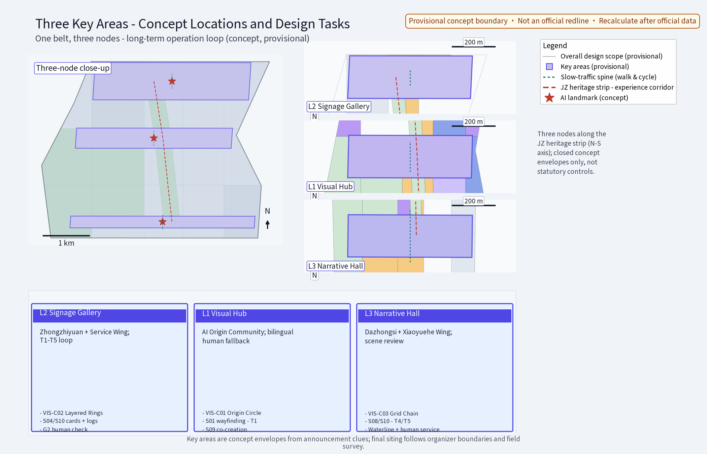
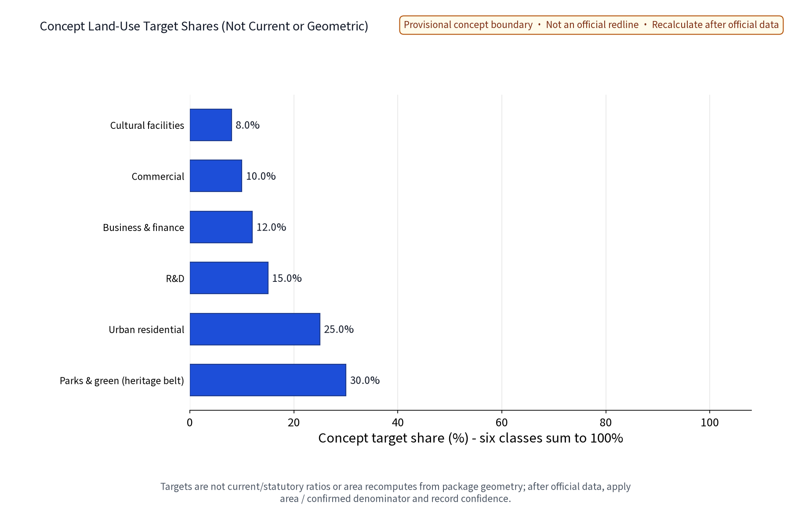
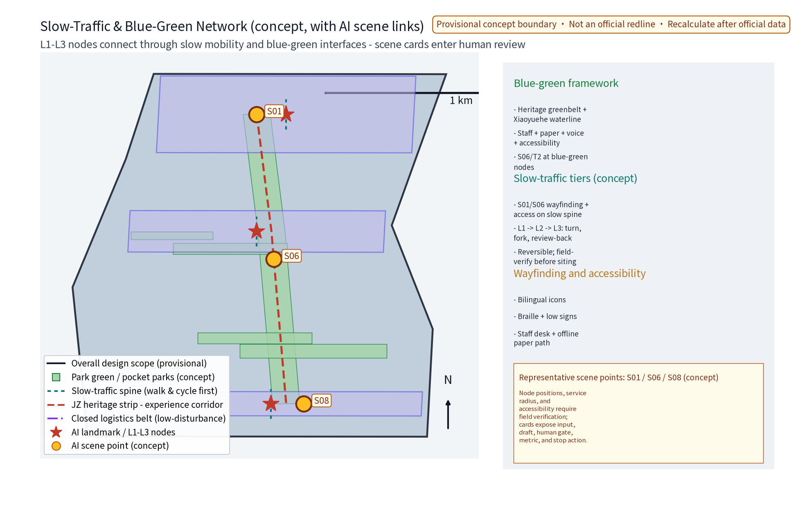
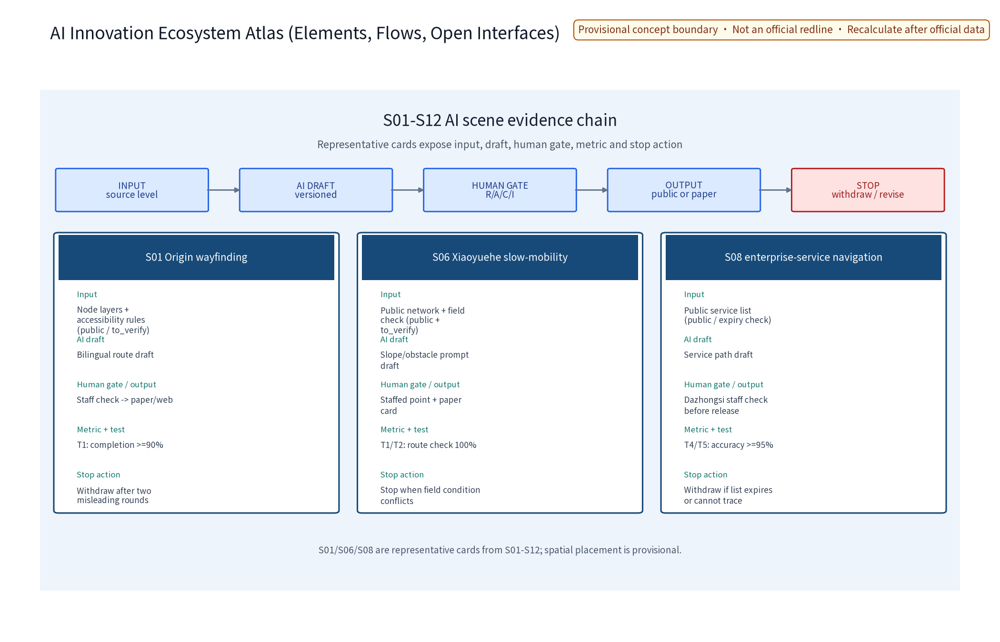

Overview map
Core metrics
site_area_sqm (provisional)11412825 green_ratio (provisional)0.11 public_space_ratio (provisional)0.003The three formal core metrics are recomputed from this package's geometry with official text calibers as the base (overall design about 11.4 km2); provisional values are shown at reasonable precision only; the whole set is recomputed after official data is published. Definitions, formulas, baselines, target ranges, frequency and owners of the five operation KPIs (activity achievement / community activity / scenario open rate / reach conversion / landmark ops rate) are in metrics.json.
Three-level scopes
Official announcement calibers: coordinated research scope about 43.6 km2; overall design scope about 11.4 km2; key areas about 368.4 ha. This package is a long-term operation concept within the overall design scope (along the Jingzhang Railway Heritage Park in Haidian District); its three concept nodes fall within the key-areas caliber; all three-tier boundaries are provisional concept divisions, recomputed after official data is published.
Key areas
Three concept nodes (concept locations; final siting after field survey, document verification, authority assessment and public input): Event Hub (annual event system and event brand & communication visual system), Developer Workshop (developer community station), Scenario Deck (AI scenario opening, public experience and landmark operation, international communication and lead conversion). The three-landmark directory, the Belt Badge honor system and the reversible component library are concept mechanisms.

Land-use zones
Concept land-use target shares (six classes sum to 100%; not current, statutory, or area shares recomputed from package geometry): park & green space 30%; residential 25%; R&D 15%; business & finance 12%; commercial 10%; cultural 8%. Target shares and the 27-geometry-feature count are separate; after official data, apply area / confirmed denominator and record confidence.

Slow traffic
Slow traffic first: a continuous slow-traffic axis links the three nodes; event-day crowd organization is integrated with the slow-traffic system; transit-station distribution is smooth; event shuttles rely on public transport and slow traffic; time-shared flexible control on event days, temporary rerouting and dismantling plans on festival days (booking/rotation).
Blue-green public space
"Greenbelt as axis, node parks as beads": the heritage greenbelt is the continuous skeleton linking the three nodes and small green pockets; event facilities integrate with low impact, light, transparent and reversible, without blocking heritage sightlines; the cultural wayfinding system is multilingual, icon-based, with braille and low-level information.

Buildings
Retain-renovate-demolish with retention first: preserve the heritage park texture and railway relics; repurpose existing buildings and reserve operation-oriented renovation directions (event space interfaces, display windows); demolition limited to case-by-case small buildings; operation facilities are modular, reversible and light-touch, no large new volumes (concept caliber, no presupposed building scale).
Renewal projects
Four concept project lists (event system / community operation / scenario opening / communication conversion) with qualitative investment tiers only (low/medium/high): near term (1-3 yr) pilot-area sample events and base mechanisms; mid term (3-5 yr) three nodes built and the annual event system mature; long term (5-10 yr) belt-wide operation and brand-asset accumulation; no investment or policy commitments.
AI scenarios
Five AI+ systems (Event Ops AI, Community QA AI, Site Monitor AI, Content AI, Lead-Matching AI) cover six domains - transport/industry/space/public services/culture/governance (concept mapping); anonymized aggregated data only, no individual-identifying tracking, no over-surveillance, human review of key decisions; 12 scenario cards and 3 industry test scenarios in proposal Section 6.

Task coverage
The compliance matrix covers 23 tasks (announcement 1.3-1.5 and agent open call 1-6); standard and design-depth matrices are in the corresponding JSON files. Agent tasks 1-6 are mapped one by one: overall positioning/functions/three-zone-two-wing synergy, AI ecosystem atlas, AI+ scenarios & vibrant city, landmarks & honor system, culture wayfinding & international comms, and the long-term operation model (annual event calendar, developer community growth path, scenario admission/exit flows, conversion funnel, governance RACI, resource tiers, review mechanism, brand-asset management).
Self-check status
The self-check results follow self_check.json: this package passes the valroot gates (spatial/visual/professional/self-check) with results and known minor notices (provisional-boundary class) recorded truthfully; machine figure-QC (ink and edge-clip) is recorded in self_check.json[figure_qc].
Sources
Data sources follow sources.json (announcement, taskbook, ministry standards, Barrier-Free Environment Law, six official case websites, self-produced provisional geometry; each with URL, published/accessed dates, license and reuse boundary); cases are qualitative mechanism references only, not data bases.
Assumptions
Key assumptions are registered in assumptions.json (6 items): provisional boundaries, unknown statutory controls, anonymized aggregation only, human review of AI content, event-effect fluctuation, regional synergy as matters to negotiate; each is reviewed and recomputed after official data is published.
Boundary notice: this page is based on provisional boundaries for intake display, discussion and revision only, not formal scoring drawings; everything is a concept suggestion and does not constitute a confirmed arrangement.